Manual de flujos · Estudio de clases USS · Por terminal
Convertir una sesión en un video hecho dentro de Google Vids: cada bloque de la clase pasa a ser una lámina ilustrada, con pantallas de la aplicación, y un avatar que la explica en español.
Cada carril es un actor y los pasos van de arriba abajo. Las cajas punteadas son decisiones: «Sí» sigue la flecha; la otra salida está en la tabla de pasos (◆).
| N.° | Actor | Paso | Qué pasa |
|---|---|---|---|
| 1 | Docente | Prepara el pedido de la clase | En la carpeta del kit ejecuta: node web/vids-prompts.mjs <clase> --contexto. Queda vids-pedido.txt con las reglas, la guía de la aplicación y cada bloque de la clase. |
| 2 | Claude o ChatGPT | Escribe el contenido de cada lámina | Pega el pedido en Claude o ChatGPT. Devuelve títulos, pantalla del software y experiencia laboral. Guarda la respuesta como vids-contenido.json en la carpeta de la clase. |
| 3 | Docente | Genera los prompts finales | Ejecuta: node web/vids-prompts.mjs <clase>. Queda vids.json con un prompt y un guion por lámina. El programa agrega el estilo, los textos revisados y el espacio del avatar. |
| 4 | Docente | Crea un video nuevo | Entra a docs.google.com/videos y pulsa +. Ponle nombre con el curso, la sesión y el tema. |
| 5 | Google Vids | Genera la lámina en el panel Imagen | Pega el prompt de la lámina, comprueba que diga 16:9 y pulsa la flecha. Tarda unos 25 segundos. |
| 6 ◆ | Docente | ¿El texto y la pantalla están bien? | Abre la vista previa. Si hay una errata, un menú falso o algo en la columna derecha, genera otra: cada intento gasta una imagen. |
| 7 | Docente | Inserta y fija la lámina como fondo | Pulsa Insertar. Luego, clic derecho sobre la imagen › Establecer imagen como fondo. |
| 8 | Docente | Escribe el guion y elige al presentador | Panel Avatar: pega el guion de la lámina. En Cambiar elige a William, tono medio grave y firme. |
| 9 | Google Vids | Genera el avatar | Pulsa Obtener vista previa y después Generar. Tarda unos 3 minutos. Gasta un avatar. |
| 10 | Docente | Coloca el avatar en su recuadro | Siempre pegado al borde derecho (X + Ancho = 1920). Selecciona el video › Opciones de formato: Ancho 600, Altura 337.5, Ángulo 0, X 1320, Y 371. Es la misma medida en todas las láminas, también en la portada. |
| 11 | Docente | Pon el logo en cada lámina (obligatorio) | Siempre, en todas las escenas y en el mismo lugar: Insertar › Subir y elige marca/logo-transparente.png. Selecciónalo y en Opciones de formato pon Ancho 300, X 1600, Y 20. El panel Cargas abre Drive y Fotos: no lo necesitas. |
| 12 | Docente | Repite en una escena nueva | El botón + crea la escena de la lámina siguiente. Repite desde el paso 5. |
| 13 | Docente | Reproduce y descarga el MP4 | Revisa todas las escenas con sonido y comprueba que cada una tenga su logo. Después: Archivo › Descargar › Video MP4. Mantén la pestaña abierta hasta que termine. |
$ node web/vids-prompts.mjs google-workspace-s1-gmail --contexto Pedido listo: clases/google-workspace-s1-gmail/vids-pedido.txt
Salida real del comando. Abre el archivo y copia todo su texto.
{
"lamina": "03",
"frase": "Una bandeja ordenada te ahorra tiempo y transmite una imagen profesional.",
"pantalla": "la bandeja Recibidos llena de correos sin leer…",
"vista": "general",
"experiencia": "Oye, imagina que tu jefe te pide un correo antiguo en plena reunión: si tu bandeja está desordenada, todos se quedan esperándote."
}Parte de una lámina en vids-contenido.json.
$ node web/vids-prompts.mjs google-workspace-s1-gmail ... 15 láminas guardadas en clases/google-workspace-s1-gmail/vids.json
Salida real del comando. Cada lámina trae su prompt y su guion.
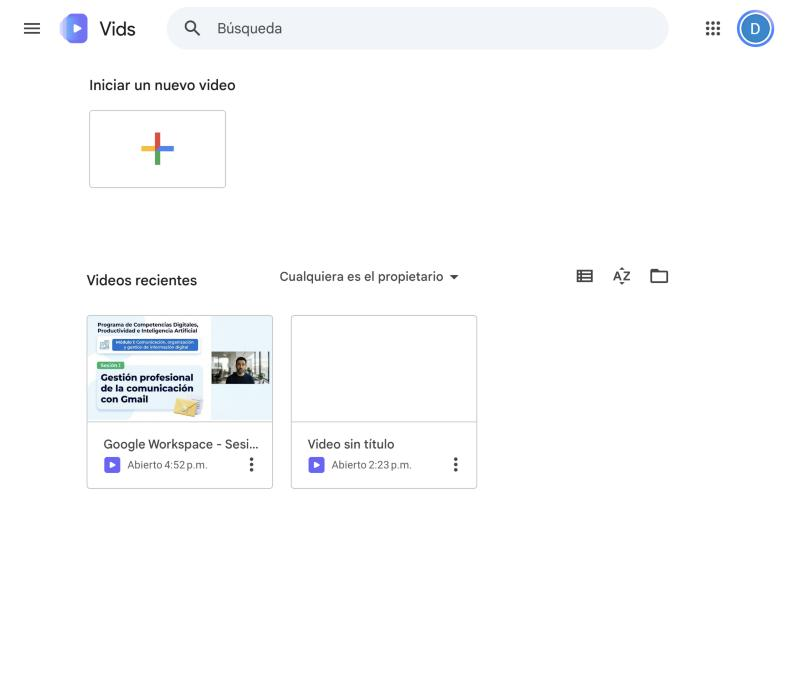
Pulsa + en Iniciar un nuevo video.
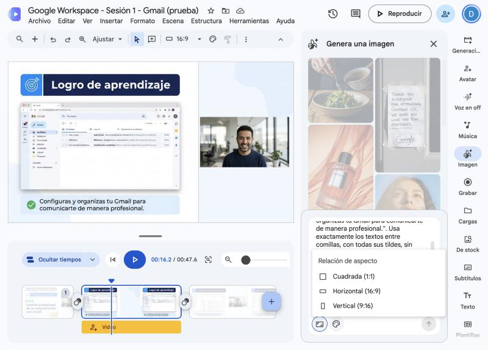
Imagen › pega el prompt › Horizontal (16:9) › flecha.
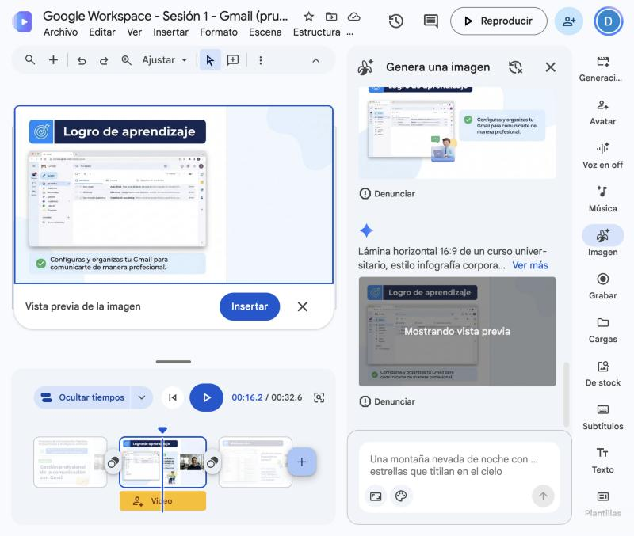
Revisa la vista previa antes de pulsar Insertar.
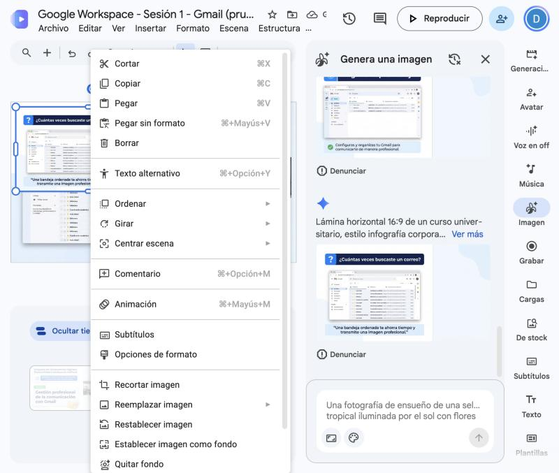
Clic derecho › Establecer imagen como fondo.
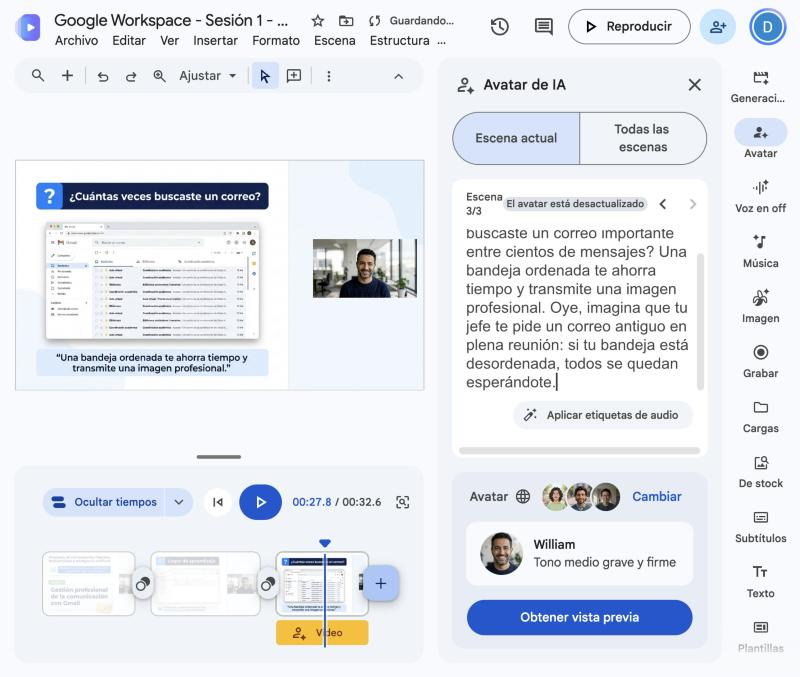
Guion con la experiencia laboral y William como presentador.
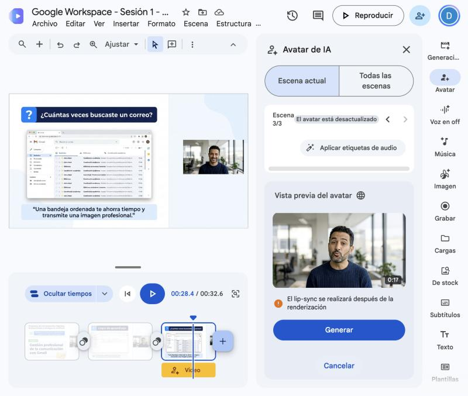
La vista previa no gasta avatar. Generar sí.
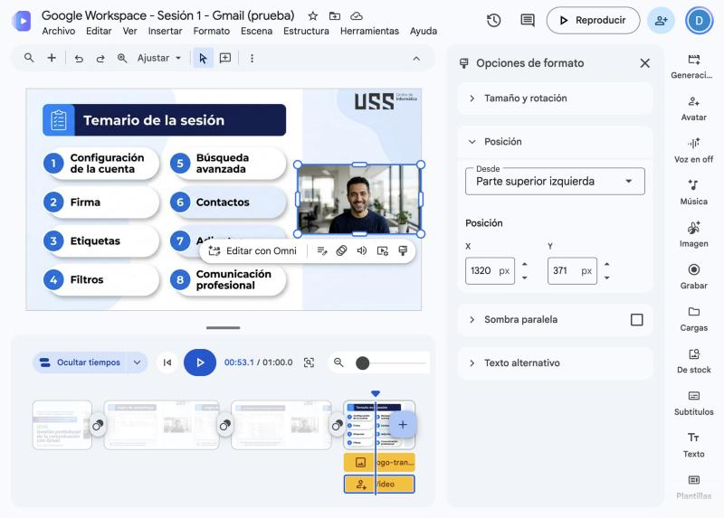
Pegado a la derecha: Ancho 600, Altura 337.5, Ángulo 0, X 1320, Y 371.
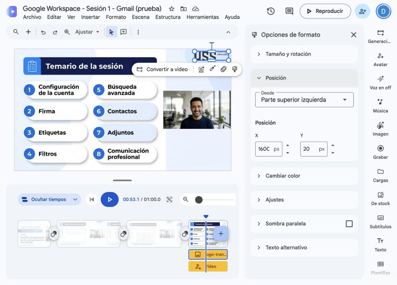
Obligatorio en cada escena: Ancho 300, X 1600, Y 20.
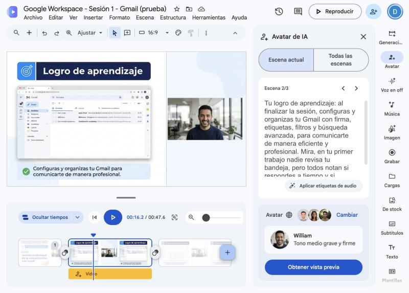
El botón + agrega la escena de la lámina siguiente.
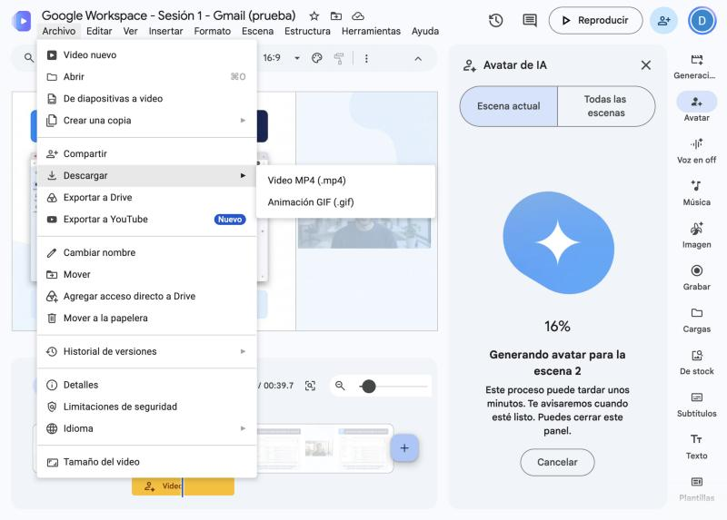
Archivo › Descargar › Video MP4 (.mp4).
| Cuenta | Créditos al mes | Clips de IA | Avatares | Imágenes | Voz en off |
|---|---|---|---|---|---|
| Personal gratis | 50 | 60 s | 6 | Gasta créditos | Gasta créditos |
| Google AI Plus | 50 | 60 s | 6 | Gasta créditos | Gasta créditos |
| Google AI Pro | No usa | 500 s | 25 | 30 | Ilimitada |
| Google AI Ultra 5x | No usa | 2 500 s | 125 | 300 | Ilimitada |
| Google AI Ultra 20x | No usa | 10 000 s | 500 | 1 000 | Ilimitada |
| Workspace Business Starter | No usa | 200 s | 10 | 5 | Ilimitada |
| Workspace Business Standard y Plus | No usa | 500 s | 25 | 30 | Ilimitada |
| Workspace for Education y Teaching and Learning | No usa | 200 s | 10 | 5 | Ilimitada |
| Google AI Pro for Education | No usa | 2 000 s | 100 | 300 | Ilimitada |
Las cuentas personales y Google AI Plus solo usan avatares prediseñados. El cupo se renueva el día 1 de cada mes a las 12:00 a. m., hora del Pacífico (3:00 a. m. en Perú, o 2:00 a. m. durante el horario de verano de EE. UU.), y no se acumula ni se comparte. En varios planes, el límite de imágenes se comparte con otros productos de Workspace, como Slides y Docs. Datos de la ayuda de Google, consultada el 5 de noviembre de 2026; Google puede cambiarlos.
| Qué haces | Créditos que gasta |
|---|---|
| Generar o editar una imagen | 1 |
| Generar una voz en off | 1 |
| Usar Ayúdame a crear | 5 |
| Convertir Presentaciones en video con voz en off | 5 |
El crédito es el saldo mensual de IA de las cuentas Personal gratis, Google AI Plus y Workspace Individual. Cada acción descuenta créditos de ese saldo de 50. Ejemplo: 30 imágenes y 20 voces en off gastan los 50 créditos. Los avatares y los clips tienen su propio límite en la tabla de arriba. Las cuentas con «No usa» no tienen créditos: cuentan cada imagen, avatar o segundo.
| Forma de trabajar | Imágenes | Avatares | Sesiones al mes |
|---|---|---|---|
| 15 láminas con avatar en todas | 15 | 15 | 1 |
| 15 láminas con avatar en portada y cierre, y voz en off en el resto | 15 | 2 | 2 |
El límite que manda en esta cuenta son las 30 imágenes. Cuenta también los intentos: si una lámina se repite, gasta otra imagen.
| Caso | 1 minuto | 2 minutos | 3 minutos |
|---|---|---|---|
| Todo sale a la primera15 s por lámina y 1 imagen por lámina | 4 láminas 4 imágenes 4 avatares | 8 láminas 8 imágenes 8 avatares | 12 láminas 12 imágenes 12 avatares |
| Falla una vez cada lámina15 s por lámina y 2 imágenes por lámina | 4 láminas 8 imágenes 4 avatares | 8 láminas 16 imágenes 8 avatares | 12 láminas 24 imágenes 12 avatares |
| Láminas cortas y falla una vez10 s por lámina y 2 imágenes por lámina | 6 láminas 12 imágenes 6 avatares | 12 láminas 24 imágenes 12 avatares | 18 láminas 36 imágenes 18 avatares |
| Misma lámina en 2 escenas30 s por lámina, 2 avatares de 15 s y 2 imágenes por lámina | 2 láminas 4 imágenes 4 avatares | 4 láminas 8 imágenes 8 avatares | 6 láminas 12 imágenes 12 avatares |
| Misma lámina en 3 escenas45 s por lámina, 3 avatares de 15 s y 2 imágenes por lámina | 2 láminas 4 imágenes 4 avatares | 3 láminas 6 imágenes 8 avatares | 4 láminas 8 imágenes 12 avatares |
| Misma lámina con guion largo45 s por lámina, 1 avatar de 45 s y 2 imágenes por lámina | 2 láminas 4 imágenes 2 avatares | 3 láminas 6 imágenes 3 avatares | 4 láminas 8 imágenes 4 avatares |
| Avatar solo en 2 láminas15 s por lámina, voz en off en las demás y 2 imágenes por lámina | 4 láminas 8 imágenes 2 avatares 2 voces en off | 8 láminas 16 imágenes 2 avatares 6 voces en off | 12 láminas 24 imágenes 2 avatares 10 voces en off |
Nuestro video midió 10, 20, 17 y 12 segundos: 4 láminas, 1 minuto y unos 15 segundos por lámina. Cada avatar puede durar hasta 60 segundos. Una imagen fallida gasta cupo aunque no se use; la vista previa del avatar no gasta.
| Caso | Personal gratis | Google AI Pro | AI Pro for Education | ||||||
|---|---|---|---|---|---|---|---|---|---|
| 1 min | 2 min | 3 min | 1 min | 2 min | 3 min | 1 min | 2 min | 3 min | |
| Todo sale a la primera | 1 | No | No | 6 | 3 | 2 | 25 | 12 | 8 |
| Falla una vez cada lámina | 1 | No | No | 3 | 1 | 1 | 25 | 12 | 8 |
| Láminas cortas y falla una vez | 1 | No | No | 2 | 1 | No | 16 | 8 | 5 |
| Misma lámina en 2 escenas | 1 | No | No | 6 | 3 | 2 | 25 | 12 | 8 |
| Misma lámina en 3 escenas | 1 | No | No | 6 | 3 | 2 | 25 | 12 | 8 |
| Misma lámina con guion largo | 3 | 2 | 1 | 7 | 5 | 3 | 50 | 33 | 25 |
| Avatar solo en 2 láminas | 3 | 2 | 1 | 3 | 1 | 1 | 37 | 18 | 12 |
Cuenta vacía a inicio de mes; manda el límite que se acabe primero. La cuenta gratis tiene 50 créditos y 6 avatares: cada imagen y cada voz en off gasta 1 crédito. Google AI Pro tiene 30 imágenes y 25 avatares. Google AI Pro for Education tiene 300 imágenes y 100 avatares; lo asigna el administrador de la institución.
| Video | Láminas | Cómo se logra | Imágenes nuevas | Avatares nuevos |
|---|---|---|---|---|
| 1 minuto | 4 | Ya está hecho | 0 | 0 |
| 2 minutos | 4 | Cada lámina en 2 escenas, con la segunda parte del guion | 0 | 4 |
| 3 minutos | 4 | Cada lámina en 3 escenas, con más guion | 0 | 8 |
| 2 minutos | 8 | 4 láminas nuevas, fallando una vez cada una | 8 | 4 |
| 3 minutos | 12 | 8 láminas nuevas, fallando una vez cada una | 16 | 8 |
Un minuto de avatar lleva unas 140 palabras de guion: nuestro video tiene 141. Una lámina repetida no gasta imagen, pero cada guion nuevo gasta 1 avatar. En una cuenta gratis caben 6 avatares al mes: desde la escena 7 usa voz en off o un guion más largo.
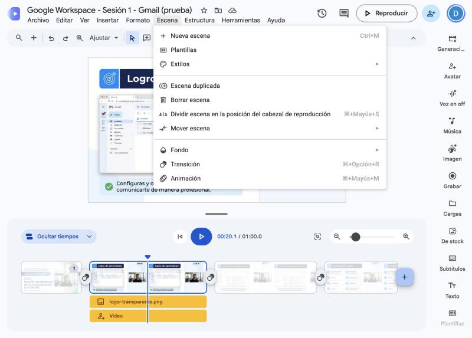
Copia el prompt y cambia solo lo que está en amarillo. Si va entre comillas, deja las comillas: la IA copia ese texto en la lámina. Lo demás guarda el estilo del curso.
Portada horizontal 16:9 de un curso universitario, con acabado de publicidad corporativa, muy luminosa y pulida. La lámina tiene dos mitades. La mitad izquierda es blanca con un degradado azul muy pálido. La mitad derecha es una fotografía real y luminosa de una oficina moderna con ventanales, estantes y plantas, suavemente desenfocada y sin personas, que se funde con la mitad blanca por un borde diagonal suave. En la esquina inferior derecha, un triángulo verde brillante. En la parte alta de la fotografía, cerca del borde derecho, el ícono oficial de Gmail dentro de un globo de chat blanco con esquinas redondeadas y sombra suave. En la mitad izquierda, alineado a la izquierda y ocupando toda la altura, de arriba abajo: el texto azul marino de peso normal "Programa de Competencias Digitales, Productividad e Inteligencia Artificial"; una barra con degradado de azul marino a azul brillante, esquinas redondeadas y texto blanco en negrita "Módulo I: Comunicación, organización y gestión de información digital"; una etiqueta verde brillante con esquinas redondeadas y texto blanco en negrita "Sesión 1"; el título muy grande en negrita gruesa azul marino, directamente sobre el fondo blanco, sin tarjeta ni recuadro detrás, "Gestión profesional de la comunicación con Gmail"; al pie, el logotipo a todo color de Google Workspace. Usa exactamente los textos entre comillas, con todas sus tildes, sin agregar ni repetir palabras y sin escribir las comillas en la lámina. Sin tarjetas, sobres ni ilustraciones dibujadas. Sin personas ni personajes. Sin marcas de agua. No escribas el nombre de la universidad ni otros logotipos.
| Aquí cambias | En este ejemplo dice |
|---|---|
| Programa | Programa de Competencias Digitales, Productividad e Inteligencia Artificial |
| Módulo | Módulo I: Comunicación, organización y gestión de información digital |
| Sesión | Sesión 1 |
| Título o tema | Gestión profesional de la comunicación con Gmail |
| Aplicación del ícono | Gmail |
| Categoría del pie | Google Workspace |
Copia el prompt y cambia solo lo que está en amarillo. Si va entre comillas, deja las comillas: la IA copia ese texto en la lámina. Lo demás guarda el estilo del curso.
Lámina horizontal 16:9 de un curso universitario, estilo infografía corporativa moderna y muy pulida. Fondo blanco con degradado azul muy pálido y formas suaves. Paleta: azul marino, azul brillante, verde y amarillo suave como acento. Tipografía sans serif clara, títulos en negrita. Tarjetas blancas o azul pálido con esquinas redondeadas y sombra suave. Íconos de línea azul. Todo el texto es grande y se lee a distancia, y el contenido llena todo el alto de la lámina. Divide la lámina en tres columnas iguales. La columna derecha queda completamente vacía de arriba abajo, solo con el fondo: nada de texto, íconos, tarjetas, ilustraciones ni personas. Todo el contenido cabe dentro de las dos columnas izquierdas y ningún elemento cruza a la columna derecha. Arriba, dentro de las dos columnas izquierdas, una barra azul marino con esquinas redondeadas; en su extremo izquierdo un cuadrado azul brillante con un signo de pregunta en blanco; dentro de la barra, en blanco y negrita: "¿Cuántas veces buscaste un correo?". Debajo, una captura de pantalla real de Gmail en computadora, en español, dentro de una ventana de navegador, plana y de frente, sin inclinación ni perspectiva, con la interfaz, los colores, los íconos y la tipografía originales: la bandeja Recibidos llena de correos sin leer de Aula virtual, Biblioteca y Coordinación académica, con el panel izquierdo visible. Se ve la ventana completa de la aplicación. La captura es la protagonista: ocupa todo el ancho de las dos columnas izquierdas. Debajo de la captura, una franja azul pálida con el texto "Una bandeja ordenada te ahorra tiempo y transmite una imagen profesional.". Usa exactamente los textos entre comillas, con todas sus tildes, sin agregar ni repetir palabras y sin escribir las comillas en la lámina. No dibujes personas, personajes, muñecos, mascotas ni ilustraciones decorativas: la única imagen es la captura. Sin marcas de agua. Los únicos logotipos son los propios de la aplicación dentro de la captura.
| Aquí cambias | En este ejemplo dice |
|---|---|
| Ícono de la barra | un signo de pregunta |
| Título de la barra | ¿Cuántas veces buscaste un correo? |
| Aplicación | Gmail |
| Qué se ve en la pantalla | la bandeja Recibidos llena de correos sin leer… |
| Frase de abajo | Una bandeja ordenada te ahorra tiempo y transmite una imagen profesional. |
Copia el prompt y cambia solo lo que está en amarillo. Si va entre comillas, deja las comillas: la IA copia ese texto en la lámina. Lo demás guarda el estilo del curso.
Escribe el guion de una clase universitaria en español de Perú, con trato de tú. Curso: Google Workspace. Sesión: Sesión 1. Tema: Gestión profesional de la comunicación con Gmail. Nivel: Básico. Duración: 1 minuto, unas 140 palabras. Logro: configuras y organizas tu Gmail. Temas: firma, etiquetas, filtros y búsqueda avanzada. Sigue este orden: saludo, logro, motivación, temario, un bloque por tema, práctica, conclusiones y cierre. Empieza con "Soy tu profesor virtual de la Universidad Señor de Sipán". En motivación y desarrollo cuenta una situación real de trabajo. No inventes cifras, empresas, personas ni menús. Escribe solo lo que se dice en voz alta.
| Aquí cambias | En este ejemplo dice |
|---|---|
| Curso | Google Workspace |
| Sesión | Sesión 1 |
| Título o tema | Gestión profesional de la comunicación con Gmail |
| Nivel | Básico |
| Duración | 1 minuto, unas 140 palabras |
| Logro | configuras y organizas tu Gmail |
| Temas | firma, etiquetas, filtros y búsqueda avanzada |
Copia el prompt y cambia solo lo que está en amarillo. Si va entre comillas, deja las comillas: la IA copia ese texto en la lámina. Lo demás guarda el estilo del curso.
Escribe el contenido de una lámina HTML para Hyperframes. Usa solo las etiquetas div, span, h2, h3, p, b, em y code, y las clases barra, barra-icono, barra-texto, frase, grupo, tarjeta, fila, num, texto, codigo y nota. Sin script, style, imágenes, enlaces ni id. Parte: temario. Título de la barra: Temario de la sesión. Temas: Firma; Etiquetas; Filtros; Búsqueda avanzada. Duración: 12 segundos. Copia los títulos tal cual, sin subtítulos. Cada elemento aparece cuando la voz lo nombra. Responde solo con JSON: {"lamina": "04", "html": "...", "animaciones": [{"selector": ".fila", "momento": 1.2, "efecto": "izquierda", "escalonado": 0.5}]}. Los efectos son aparecer, subir, izquierda y escala.
| Aquí cambias | En este ejemplo dice |
|---|---|
| Parte de la sesión | temario |
| Título de la barra | Temario de la sesión |
| Temas o contenido | Firma; Etiquetas; Filtros; Búsqueda avanzada |
| Duración | 12 segundos |
| Lo que ves | Por qué pasa | Qué hacer |
|---|---|---|
| La lámina repite una palabra o trae una errata | La IA de imágenes copió mal el texto. | No la insertes. Genera otra y revisa la vista previa. |
| Se oyen dos voces | La escena tiene voz en off y avatar a la vez. | Selecciona la pista azul de voz en off y bórrala. |
| El avatar tapa la lámina | Vids lo inserta a pantalla completa. | Usa Opciones de formato con las medidas del paso 10. |
| El avatar desapareció | Se usó Deshacer justo después de que llegó. | Genéralo de nuevo; gasta otro avatar. Espera a que termine antes de deshacer. |
| Una escena quedó sin logo | Cada escena necesita su propio logo: Vids no lo copia a las demás. | Antes de descargar, insértalo en esa escena y dale sus medidas. |
| Dice «El avatar está desactualizado» | Cambiaste el guion después de generar el avatar. | Pulsa Obtener vista previa y Generar. Gasta otro avatar. |
| La imagen no sale en 16:9 | El panel olvidó el formato. | Antes de la flecha, comprueba que diga 16:9. |
| Ya no deja generar | Se terminó el cupo del mes. | Espera al día 1 o continúa con la cuenta real de otro docente. |